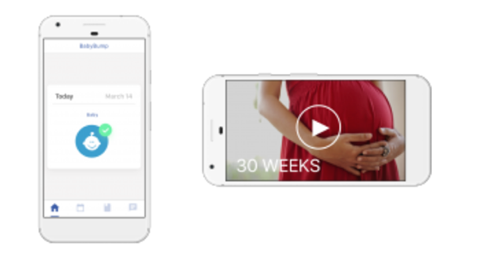
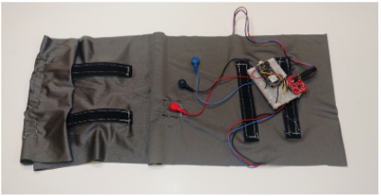

Design the Graphic User Interface of application to match user needs. Explore algorithm to seperate fetal heart rate from ECG diagram and System Design on the workflow of information transformation
Design and Build Hardware prototype that is portable and comfortable to wear to and demonstrate the possibility of measuring fetal heart rate data through continuous fetal monitoring
